- Index
-
 ImageMagick Examples Preface and Index
ImageMagick Examples Preface and Index
-
 Affine Matrix Transforms
Affine Matrix Transforms
-
Affine Scaling
-
Affine Flips and Flops
-
Affine Shearing
-
Affine Rotations
-
Position of Affine Results
-
Affine Translations
-
Affine Result Re-Positioning
-
Compound Affine Translations
-
Affine Helper Scripts
-
Other Affine Transform Methods
- Affine Transform DIY (internal details)
The Affine Projection Matrix is not a simple distortion
operator to understand. But it is very versatile and fast to
distort an image using it. In this section we take a look at
how the affine matrix works, both in ImageMagick and all other
Image Processors. WARNING: See the first

message below.
Affine Transformations
The Affine Transformation is a
general rotation, shear, scale, and translation distortion
operator. That is it will modify an image to perform all four
of the given distortions all at the same time. These are all
'linear' distortions, by which I mean two straight parallel
lines present in an image will remain straight and parallel. It
is not a perspective or trapezoidal transformation, which while
lines remain straight, they may not remain parallel. Confused.
I'm not surprised. Both Affine and Perspective Transforms are
such a general technique that it is difficult to understand. So
I'll try to start slow with what you have seen, and advance to
more difficult aspects as we go.
The "
-affine"
option is a setting that defines a set of 6 numbers which fully
defines the way an image is to be distorted. The "
-transform"
operator then performs this distortion. You can in fact apply
affine transformation in a number of simpler ways using the
newer
Generalised Distortion
Operator "
-distort",
but I will use the older "
-affine"
operator instead, as it has historically always been available
in IM. The two options "
-affine"
and "
-transform",
are separated as the "
-affine"
setting is also use as a vector mapping for the "
-draw"
command (see
Warp the
Drawing Surface). As such, be careful about mixing these
options. The arguments are supplied as a single comma separated
string...
-affine sx,rx,ry,sy,tx,ty
These 6 numbers
actually form a mathematical 'matrix' that translates a
position in the source image to a final position in the
destination image, and is expressed in terms of a 'matrix'...
| sx rx 0 |
| x', y', 1 | = | x, y, 1 | * | ry sy 0 |
| tx ty 1 |This
equates to the mathematical formula...
( x', y' ) = ( x * sx + y * ry + tx, x * rx + y * sy + ty )
This
should be kept in mind, and we will re-visit it later. However
for now just note that this is the real meaning of a Affine
transformation. As a starting point, if you use a "
-affine"
matrix of '
1,0,0,1,0,0', the above formula will
become...
( x', y' ) = ( x, y )
In other words, it will make
no changes to the image, and is the best point to start
our exploration of Affine Transformations. Here we apply this
transformation to our 'koala' image...
convert koala.gif -matte -virtual-pixel Transparent \
-affine 1,0,0,1,0,0 -transform +repage affine_null.png
|
|
|
As you see nothing changed. But there are a few things you
should note about the above command. The options "
-matte
-virtual-pixel Transparent" while not very important in
the above, will be very important later. they basically tell IM
to add a alpha channel and make all pixels outside the input
image transparent. See
Transparent Virtual Pixel
Setting for more detail. Also the image has been slightly
enlarged by 1 pixel on all sides which is is to ensure that any
semi-transparency effects along the edges of the image are also
preserved. I also used a "
+repage"
operator to reset the images position after performing the
affine transformation. This is important as raw affine
transformations can not only change an images size, but also an
images position. In many cases a negative position is created
which often does not work well with images used on a web page.
This use of "
+repage"
with affine will be talked about in detail later, as a useful
part of the output from the affine transformation. But for now
we will use it to ignore any translation component in the
result.
 |
Before
IM v6.4.2-8, the "-affine"
and "-transform"
combination, used the affine subroutine that was defined in
the "-draw"
operator. This affine distortion routine works but causes
sever aliasing effects in
the resulting image.
After IM v6.4.2-8 the "-affine"
and "-transform"
combination uses the new General Distort, Affine
Projection method to do work, with the Best-Fit option. this
produces much better results when strong scaling is
applied. But is also means the various other Distort Options can
also be used.
As a result of this change the "-affine"
and "-transform"
options are obsolete, and users should directly use the
equivalent "+distort AffineProjection ..."
operator instead, with all its extra control settings and
options.
|
Here is the same example again using the newer
"
+distort"
operator, and producing the exact same result.
convert koala.gif -matte -virtual-pixel Transparent \
+distort AffineProjection 1,0,0,1,0,0 +repage affine_proj_null.png
|
|
![[IM Output]](affine_proj_null.png)
|
The rest of these example use the old method as they were
written long before the new "
+distort"
operator became available.
Affine Scaling
The two '
1' values in the
last examples, or the '
sx' and '
sy'
arguments, are scaling factors, and modifying these will
enlarge or shrink the image. The size of the resulting image
will be adjusted accordingly, so as to hold the complete
result.
convert koala.gif -matte -virtual-pixel Transparent \
-affine 1.5,0,0,1.5,0,0 -transform +repage affine_expand.png
convert koala.gif -matte -virtual-pixel Transparent \
-affine 1.0,0,0,0.5,0,0 -transform +repage affine_shrink.png
|
Note that the image are scaled to produce a simular
result as "
-resize",
but are not limited to whole pixel boundaries. That is you can
have semi-tranparent (fuzzy) partial pixels along the edges of
the image. See
Resize
Distort/Affine for more details.
Affine Flips and Flops
This may not seem exciting or
interesting, but image scaling with a negative will also
produce "
-flip"
and "
-flop"
style of image transforms.
convert koala.gif -matte -virtual-pixel Transparent \
-affine 1,0,0,-1,0,0 -transform +repage affine_flip.png
convert koala.gif -matte -virtual-pixel Transparent \
-affine -1,0,0,1,0,0 -transform +repage affine_flop.png
convert koala.gif -matte -virtual-pixel Transparent \
-affine -1,0,0,-1,0,0 -transform +repage affine_180.png
|
Affine Shearing
The middle two zero arguments,
'
rx' and '
ry', will shear the image
in a similar way the "
-shear"
operator does.
convert koala.gif -matte -virtual-pixel Transparent \
-affine 1,.3,0,1,0,0 -transform +repage affine_shear_x.png
convert koala.gif -matte -virtual-pixel Transparent \
-affine 1,-.3,0,1,0,0 -transform +repage affine_shear-x.png
convert koala.gif -matte -virtual-pixel Transparent \
-affine 1,0,.3,1,0,0 -transform +repage affine_shear_y.png
convert koala.gif -matte -virtual-pixel Transparent \
-affine 1,.3,.3,1,0,0 -transform +repage affine_shear_xy.png
convert koala.gif -matte -virtual-pixel Transparent \
-affine 1,-.3,.3,1,0,0 -transform +repage affine_shear_rot.png
|
Note how this is different to the 'simpler'
Shear Operator, in that
both the X and the Y shears are applied together, rather than
consecutively. This allows the affine version of shear (with
some proportional scaling) to perform proper rotations of the
image about the origin point. The actual value use for the
shear, is also not an angle, though is related (see below).
That is a shear value of '
1' will result in a 45
degree shear, while a value of '
.5' is an
approximate 30 degree shear. This gets more complex however if
some scaling or both X and Y shears are also applied at the
same time.
Affine Rotations
You may have noticed in the last
example above that you can rotate an image just by using
shears. However when rotating an image by only using shears,
the image will become larger. To fix this you also need to make
the image slightly smaller by adjusting the scaling of the
image. For example...
convert koala.gif -matte -virtual-pixel Transparent \
-affine .9,-.1,.1,.9,0,0 -transform +repage affine_rotate.png
|
|
|
If you want to calculate the correct affine matrix to
do proper unscaled rotation for any angle you can use the
following formula...
sx = cos(α); rx = sin(α)
ry = -sin(α); sy = cos(α)
where α is the angle to rotate in radians.
For example...
angle=-75; radians=`perl -e "print $angle * atan2(1,1)/45"`
sx=`perl -e "print cos( $radians )"`
rx=`perl -e "print sin( $radians )"`
ry=`perl -e "print -($rx)"`
sy="$sx"
convert koala.gif -matte -virtual-pixel Transparent \
-affine $sx,$rx,$ry,$sy,0,0 -transform +repage affine_rotate2.png
|
|
|
To make this calculation easier I created a simple perl
script, "
affine_rotate" to do
these calculations for you.
affine_rotate 25 > affine_rotate.txt
convert koala.gif -matte -virtual-pixel Transparent \
-affine `affine_rotate 25` -transform +repage affine_rotate3.png
|
|
|
|
|
More on this
Affine
Helper Script later.
Position of Affine Results
You will have noticed the
use of "
+repage"
in just about all the above examples of using an affine
transformation. This is because the transformed image is not
always a acceptable value for displaying images on web pages.
So lets have a look at the raw canvas information generated by
some of the transformations we used above. Here I perform a
affine flop, shear, and rotate of the example image and output
the resulting images information, but I will not display the
images produced as they are the same as the previous examples,
just having some 'negative' offsets making them un-displayable
directly on a web page.
convert koala.gif -affine -1,0,0,1,0,0 -transform info:
convert koala.gif -affine 1,-.3,0,1,0,0 -transform info:
convert koala.gif -affine .9,-.1,.1,.9 -transform info:
|
First ignore the size of the virtual canvas generated by
the transformation. This size is of little importance as it is
not always possible for it to be a sensible value, though IM
tries to make it sensible in most cases. What is important is
that the the final position of the images in all the these
cases have a negative value. This is the true location of the
image after the "
-affine"
transformation has been performed, and shows the image being
transformed around the 'origin' or top-left corner of the
image.
If
we use a little extra processing of the transformed into a
'
viewport
image', we can show how the image was positioned relative
to the images original origin or 0,0 position of the original
image.
convert koala.gif -matte -virtual-pixel Transparent \
-bordercolor blue -compose copy -border 1x1 -repage -1-1\! \
-compose over -crop 160x160-80-80\! -background lightblue -flatten \
-draw "fill red path 'M 80,70 80,90 M 70,80 90,80'" \
affine_null_view.gif
convert koala.gif -matte -virtual-pixel Transparent \
-affine -1,0,0,1,0,0 -transform \
-bordercolor blue -compose copy -border 1x1 -repage -1-1\! \
-compose over -crop 160x160-80-80\! -background lightblue -flatten \
-draw "fill red path 'M 80,70 80,90 M 70,80 90,80'" \
affine_flop_view.gif
convert koala.gif -matte -virtual-pixel Transparent \
-affine 1,-.3,0,1,0,0 -transform \
-bordercolor blue -compose copy -border 1x1 -repage -1-1\! \
-compose over -crop 160x160-80-80\! -background lightblue -flatten \
-draw "fill red path 'M 80,70 80,90 M 70,80 90,80'" \
affine_shear_view.gif
convert koala.gif -matte -virtual-pixel Transparent \
-affine 0.1,-0.95,0.95,0.1 -transform \
-bordercolor blue -compose copy -border 1x1 -repage -1-1\! \
-compose over -crop 160x160-80-80\! -background lightblue -flatten \
-draw "fill red path 'M 80,70 80,90 M 70,80 90,80'" \
affine_rot_view.gif
|
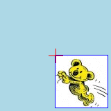  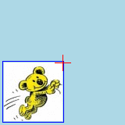 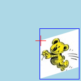 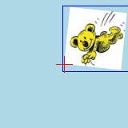
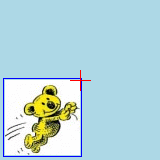 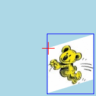 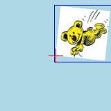
Yes the above is complex, but adds a lot if information
about the resulting "
-affine"
transformation that is normally hard to see. First it adds a
blue border around the actual image data result without
effecting the virtual offset of the resulting image. This is
then overlaid onto a viewport canvas, with the origin or 0,0
point centered in the image. A red cross is draw at that point,
to show how the image relates to the origin of the original
image after being transformed. Notice how in all the above
transformations, the actual image generate is given a negative
offset. That is the position of the very top left corner of the
blue box is either above or to the left of the origin. The
Affine transform does this as all the transformations performed
leave the images original origin (0,0 pixel) at the origin.
That is this point does not move when an image is purely
scaled, rotated, or sheared. The only time the images original
origin (or 0,0) point changes is if you also give a translation
component. This special handling of virtual canvas offsets by
the "
-transform"
operator is important so as to avoid loosing information about
the results of the affine transformation. It also means that we
can use that offset to set this images location correctly when
it is combined with other images.
Affine Translations
As a pure translation of an image
(using an integer offset), only moves an image to another
location without distortion, the actual result of the
"
-affine"
transformation, is that the images page offset on the virtual
page or canvas is changed. However IM will still process each
and every pixel in the image, even though there only a simple
change in offset. For example this shows that the image has
been move on the larger virtual canvas, so that the koala's
nose (pixel
28,24) is positioned at the origin
convert koala.gif -matte -virtual-pixel Transparent \
-affine 1,0,0,1,-28,-24 -transform -identify koala_nose.png
|
As you can see from the identify output above, the image
size was not changed, though the offset of the image was
changed. Unfortunately I can not display the generated PNG
image directly on this web page, as a negative offset can cause
undefined and often disastrous effects to the web browser
output. By taking a
viewport image of the result,
I can remove that negative offset and show how the image was
translated relative to the images virtual canvas.
convert koala_nose.png -virtual-pixel Transparent \
-bordercolor blue -compose copy -border 1x1 -repage -1-1\! \
-compose over -crop 160x160-80-80\! -background lightblue -flatten \
-draw "fill red path 'M 80,70 80,90 M 70,80 90,80'" \
koala_nose_vp.gif
|
Note how the koala image itself was left unchanged. Only
its offset on the virtual canvas was modified. However you
should note that IM did still did the calculations and
processing needed for each and every pixel in the final image.
In other words the result of a pure translation is that the
image offset changed, and that you can do more easily and
directly using a "
-repage"
operation with a '
!' flag. Of course if your
affine matrix does more than just translate the image, or
translates the image a fraction of a pixel, then you are better
off doing the translation as part of the "
-affine"
matrix transformation. Translation components is an important
part of a general "
-affine"
transformation, as it will allow you to rotate an image about
any point on the image, or even outside the image being
transformed.
Affine Result Re-Positioning
 |
Note
that negative offsets are ignored by GIF image format, and
will be saved as a zero offset, instead. On the other hand
while the PNG file format will save negative offsets, many
web browsers and image programs will not handle that
situation, producing unexpected results. |
It is because of this I have avoided displayed any
affine image results that contain a negative offset. Of course
you can use negative offsets in PNG images for later work,
preserving the offset for later use. For example if you save a
image with a negative value into a GIF format image the
negative values are replace by zero. And while PNG images will
correctly save a negative position, it may have undefined
consequences when displayed on a web browser. For example some
browsers have been known to generate extremely large canvases
for small PNG images with a negative offset. Of course the JPEG
image format just ignores any position and canvas information
that may be present. So what can you do to correct the position
of an image, so as to have a positive offset. That depends on
what you are trying to do. After applying a affine
transformation, you would then usually apply one of the
following operations, to adjust the canvas and offset of the
resulting image.
- Reset the image position with +repage
- If you just want the resulting image, and don't care
about the offset produced by the transformation, you can use
"
+repage"
to reset the page information, just as we do in the examples
above.
- Crop image to a new relative position
-
Using a 'viewport crop'
you can reposition the image and look at it as if you are
viewing it though a window or viewport, onto the virtual
canvas. An example of this is given above in Position of Affine
Results.
- Post Re-position of the Image
-
You can always just translate the position of the resulting
image. This can be done by using an absolute
"
-repage",
a relative "-repage"
(with a '!' option), or even by adding a
Affine Translation component to the translation
matrix, to adjust the final position of the image. For
example here is a correct flip affine transform, so that it
is positioned correctly (other than the need to
"-shave"
the extra edge pixels that were added as a precaution.
convert koala.gif -affine 1,0,0,-1,0,75 -transform \
-shave 1x1 affine_goodflip.gif
|
|
|
Note that the translation component of an affine
transformation is performed after the rotation and
scaling has been completed. This is what we will look at in
the next section.
These are only some of the possibilities, and basically
depends on just what you want to do with the resulting image.
All you really need to do is decide whether you need to keep
the offsets of the transformation, or not.
Compound Affine Translations
It is important to know
that all the non-translation affine matrix methods does not
actually cause the 0,0 position of the image to move. The only
time this point actually moves was when either the generated
offset of the image was reset (generally using "
+repage")
or you also translated the resulting image, as part of the
affine matrix. However one of the most important uses of affine
transformations is to rotate images about a specific point,
rather than the origin. And it is here that things start
getting much more difficult. By re-positioning the image before
the affine transformation, you can position the point about
which you want to rotate, at the origin. This point should not
move under a non-translation affine transformation, so that
point will still be at the origin after the rotation has been
performed. You can then move the image back to its original
position, or some other position, in a controlled way. For
example, in the example above we translated the koala image so
that its nose (pixel 28,24) was at the origin. Now lets rotate
that image. and again display a
viewport image of it on the
larger virtual canvas.
convert koala.gif -repage -28-24 -matte -virtual-pixel Transparent \
-affine .5,-.866,.866,.5,0,0 -transform koala_nose_rot.png
convert koala_nose_rot.png \
-bordercolor blue -compose copy -border 1x1 -repage -1-1\! \
-compose over -crop 160x160-80-80\! -background lightblue -flatten \
-draw "fill red path 'M 80,70 80,90 M 70,80 90,80'" \
koala_nose_rot_vp.gif
|
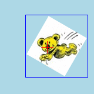
Notice that the rotation was around the origin, which due
to the page offset, is currently positioned on the koala's
nose. Now if you translate the image back by the original
translation, we will have rotated the image about its nose, but
without the nose changing position. That is, to properly rotate
an image about a specific point you will need to translate,
rotate, and translate the image back again. The last two parts
being easily performed simply a single matrix. Here is the
complete process with the final translation also performed by
the affine matrix. Study it carefully and you will see that the
koalas nose did not move on the virtual canvas, relative to the
origin (red cross).
convert koala.gif -repage -28-24 -matte -virtual-pixel Transparent \
-affine .5,-.866,.866,.5,28,24 -transform koala_rot_nose.png
convert koala_rot_nose.png \
-bordercolor blue -compose copy -border 1x1 -repage -1-1\! \
-compose over -crop 160x160-80-80\! -background lightblue -flatten \
-draw "fill red path 'M 80,70 80,90 M 70,80 90,80'" \
koala_rot_nose_vp.gif
|
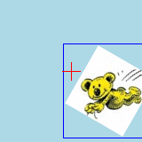
Now affine matrices can of course do all three
operations, all at the same time, however calculating the
affine matrix needed is not a trivial matter. The following is
the exact same operation, but with the appropriate, all-in-one
affine matrix.
convert koala.gif -matte -virtual-pixel Transparent \
-affine .5,-.866,.866,.5,-9.134,36.248 -transform koala_complete.png
convert koala_complete.png \
-bordercolor blue -compose copy -border 1x1 -repage -1-1\! \
-compose over -crop 160x160-80-80\! -background lightblue -flatten \
-draw "fill red path 'M 80,70 80,90 M 70,80 90,80'" \
koala_complete_vp.gif
|
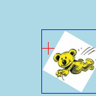
Note the position of the koala's nose relative to the
origin has not changed, even though the resulting image is now
larger with a negative canvas offset. To finish off lets repeat
it again, but crop the image back to the images original area,
and flatten onto a white background.
convert koala.gif -matte -virtual-pixel Transparent \
-affine .5,-.866,.866,.5,-9.134,36.248 -transform \
-crop 75x75+0+0\! -background white -flatten koala_rot_nose.gif
|
A perfect rotate by 60 degrees about the koala's nose.
Affine Helper Scripts
As you can see in the examples
above figuring out the affine matrix needed for your transform
is not always easy. In fact it can be very difficult and may
require a deep understanding of how affine matrices, and matrix
calculations are performed to achieve the desired result.
Because of this and to help in the creation of these examples I
have created a number of helper scripts to let you calculate
the affine matrix you needed.
affine_rotate
The affine matrix in last example could
be more simply calculated using the "
affine_distort"
script I introduced earlier. If you supply this script with a
extra argument containing the point of rotation than it will
calculate the correct affine matrix to do it. For example here
we use the script to repeat the last example to rotate about
the koala's nose, but using a larger angle.
convert koala.gif -matte -virtual-pixel Transparent \
-affine `affine_rotate -110 28,24` -transform \
-crop 75x75+0+0\! -background white -flatten koala_affine_rotate.gif
|
|
|
If you supply a second coordinate pair, the point of
rotation (first coordinate) will also be moved to the new
position you give! For example lets put the koala's nose of the
last example near the bottom of the image.
convert koala.gif -matte -virtual-pixel Transparent \
-affine `affine_rotate -110 28,24 28,72` -transform \
-crop 75x75+0+0\! -background white -flatten koala_affine_rotate2.gif
|
|
|
That is you can take an image with a specific point,
and rotate and re-position the image using that 'handle'.
 |
This
can also be directly achieved much more efficiently and
directly using the "+distort"
method 'SRT'. |
affine_distort
The script
affine_distort" is a
similar script, but will also allow you to scale or flip an
image before it is rotated and translated to a new position.
The argument order is a little different, making it a little
harder to use, but it is much more versatile. For example lets
repeat the last example, but also shrink the image, around the
repositioned 'handle'.
convert koala.gif -matte -virtual-pixel Transparent \
-affine `affine_distort 28,24 .5,.5 -110 28,72` -transform \
-crop 75x75+0+0\! -background white -flatten koala_affine_distort.gif
|
|
|
The script however will not do any shearing of the
image, but that is rarely desired.
affine_transform
A affine transformation can be fully
defined by the how a triangle of three coordinates are
translated. For example, here I define three coordinates, but
then give the same three coordinates in a 'flipped'
arrangement. The result is that the whole image is flipped.
convert koala.gif -matte -virtual-pixel Transparent \
-affine "`affine_transform 75,0 0,0 0,75 75,75 0,75 0,0`" -transform \
-crop 75x75+0+0\! -background white -flatten koala_affine_transform.gif
|
|
|
By giving the "
affine_transform"
script two sets of three coordinates, we can convert the
movement of these points, into the correct affine mapping to
transform the whole image to match that movement. Unlike the
previous script this one can flip, scale and shear images,
however it is not so useful for rotating images, as you can not
give it a direct angle of rotation.
|
This
can also be directly achieved much more efficiently and
directly using the 3 control point 'Affine' distortion
method.
And just like before that distortion method was actually a
direct development from that script into the Generalized Distort Operator.
However since its implementtation, the coordinate entry has
been reorder slightly differently. See Distortions Using Control
Points.
|
Other Affine Transform Methods
As I explained at the
start of the previous section, an affine matrix is a linear
equation that maps a point on the original image to a new
position on the destination image. That is given the affine
matrix argument...
-affine sx,rx,ry,sy,tx,ty
Actually equates to
the mathematical formula...
( i, j ) = ( x * sx + y * ry + tx, x * rx + y * sy + ty )
That
is given a point,
x,y on the starting image, that
point is remapped to the position
i,j on the
destination image. Quite straight forward really. For example
suppose we have this simple image of a stylized spaceship,
drawn using various lines form one point to the next.
convert -size 80x80 xc:skyblue -fill red -stroke black \
-draw 'path "M 15,5 20,35 25,5 Z M 10,25 30,25" ' \
spaceship.gif
|
|
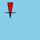
|
This is basically a very simple '
vector graphic', and has very
well defined points on the original image. The by using a
relatively simple affine matrix such as "
-affine
'1,-1,1,1,15,55'" we can map each of the coordinates for
our space ship to a new position. For example lets do the
affine calculations to the first drawn coordinate of the above
spaceship.
x,y = 15,5
i,j = x*sx + y*ry + tx, x*rx + y*sy + ty
=> 15*1 + 5*1 + 15, 15*-1 + 5*1 + 55 => 35,45
|
That is the coordinate
15,5 will be mapped
by the affine transform to position
35,45. After
converting each coordinate in out original vector image, we can
now now redraw the space ship in its new transformed
position...
convert -size 80x80 xc:skyblue -fill red -stroke black \
-draw 'path "M 35,45 70,70 45,35 Z M 50,70 70,50" ' \
spaceship_mapped.gif
|
|
|
Actually IM can do this mapping of vector coordinates
for you...
convert -size 80x80 xc:skyblue -fill red -stroke black \
-draw 'affine 1,-1,1,1,15,55
path "M 15,5 20,35 25,5 z M 10,25 30,25" ' \
spaceship_mapped_2.gif
|
|
|
As the above shows, a vector image can be transformed
very simply by just mapping the coordinates of the various line
segments and drawing the image in a new position. Not only that
but it also automatically scaled the line widths as
appropriate, which we forgot to do in the hand calculated
example. See
Affine
Warping for more information on using an affine matrix with
drawn vector images. Now lets get IM transform the original
raster image we originally created of the spaceship.
convert spaceship.gif -affine 1,-1,1,1,15,55 -transform \
-crop 80x80+0+0\! -background skyblue -flatten \
spaceship_transformed.gif
|
|
|
As you can see the result is not nearly as clean
looking as a vector image transformation, but then that is one
of the major drawbacks of using raster images. However other
than that, the result of the transformation is correct. What is
not shown above, is what IM actually did internally to
transform a raster image. Which is the subject of the next
section.
Affine Transform DIY (the internal
details)
This is what IM actually goes thru
internally to do an affine transformation. First we need to
figure out the where the transform is going to map the image,
so a new image can be created with the right size and offset.
Now due to the transformation this final location is most
likely nowhere near the same position as the original source
image. But it needs to be done so as to preserve all parts of
the image during the transformation, while using the smallest
image size posible to contain that result. To calculate the
size and offset of the destination, we first use the affine
transformation on each of the four corners of the source image,
to find the size and location of the destination image. Now our
test image has no 'virtual canvas offset', so the coordinates
of the four corners are: quite simply
0,0,
80,0,
0,80, and
80,80.
If our image did have a starting offset, then we would just add
the virtual offset to the actual width and height of our image
to calculate the actual location of the corners of the source
image. Processing these coordinates using the affine mapping we
get...
| Source Corners |
|
Transformed |
| 0,0 |
15,55 |
| 80,0 |
95,-25 |
| 0,80 |
95,135 |
| 80,80 |
175,55 |
Our destination image will thus need to be just large
enough to hold each of these four corners, with the results
rounded up or down to the nearest whole integer. The 'virtual
offset' will be the two smallest
x and
y values or
+15-25, while the width
and height of the destination image needs to be
160x160. Note that the size of the resultin
virtual canvas is irrelevant, and can be left to IM or the user
to determine, set, or ignore. In summary, our
80x80 image with a
+0+0 offset will
map completely into a
160x160 image with a
+15-25 offset. So we now know where the image will
be after the transform we need to map the pixels from the
source to the destination image. This however is not straight
forward, as it is explained in
Distortion Summary. That is rather
than mapping each individual source pixel to the destination,
we lookup the color of each destination pixel in the source.
However to do that we need to invert the affine transformation
to map the destination to the source image. But reversing a
matrix is not simple and involves some very heavy mathematics.
Fortunately due to the nature of affine matrices, the inverse
is also an affine matrix, and the mathematics becomes greatly
simplified.
|
From IM code "draw.c" here is a simple Affine Matrix Inverter
det = sx*sy - rx*ry;
inverse_sx = sy/det;
inverse_rx = -rx/det;
inverse_ry = -ry/det;
inverse_sy = sx/det; # yes, the next bit uses the just calculated values
inverse_tx = -tx*inverse_sx - ty*inverse_ry;
inverse_ty = -tx*inverse_rx - ty*inverse_sy;
|
As such the reverse of the affine matrix
'
1,1,-1,1,15,55' is
'
0.5,0.5,-0.5,0.5,20,-35'. Thus producing an
"
-fx"
expression of...
xx = 0.5*i -0.5*j +20; \
yy = 0.5*i +0.5*j -35; \
|
However the
i,j pixel location used by
"
-fx"
does not take into account the virtual offset we previously
calculated for the destination image, or any virtual offset
that may be present in the source image. As such the FX
variables
i,j first needs to have the destination
images offset added to them, then transformed, and the source
images offset subtracted, to produce the source images
x,y location. Here a complete DIY affine
transformation. Note how the destination image is created
separately to the source image, using the calculated size and
offset needed. Also that the source image is now the second or
'
v' image in the FX expression for the pixel color
lookup.
convert spaceship.gif \
-size 160x160 -page +15-25 xc: +swap \
-matte -virtual-pixel transparent -channel RGBA \
-fx 'ii = i + 15; jj = j - 25;
xx = 0.5*ii -0.5*jj +20;
yy = 0.5*ii +0.5*jj -35;
xx = xx - 0; yy = yy - 0; v.p{xx,yy}' \
spaceship_diy.png
|
|
As the
resulting image has a negative offset I needed to use the
PNG format to preserve that offset, as well as the
semi-transparent edge pixels. Also I have not shown the
results of the above transform directly, as many browsers
get confused by a PNG images containing a negative
offset. |
As we can't directly display the results, here is the
result if we do a standard
viewport crop of the
transformed image using just the area of our original image.
convert spaceship_diy.png \
-crop 80x80+0+0\! -background none -flatten \
spaceship_diy_port.png
|
|
|
And so you can see the total result of the
transformation, here is a larger overview
viewport crop of the
virtual canvas surrounding our resulting image.
convert spaceship_diy.png \
-compose copy -bordercolor blue -border 1x1 -repage -1-1\! \
-compose over -crop 200x200-10-50\! -background none -flatten \
-draw " fill none stroke red path 'M 0,50 20,50 M 10,40 10,60' \
stroke green path 'M 9,49 9,130 90,130 90,49 Z'" \
-trim +repage spaceship_diy_view.gif
|
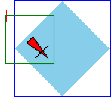
To show the relative positions of the result, I added a
blue border around the result, and a red cross marking the
0,0 origin of the virtual canvas. I also drew a
green box around the location of the original source image
before it was transformed. This box is typically the normal
area in which a
viewport crop is
taken (see previous example directly using the builtin affine
transformation), rather than the larger overview of the virtual
canvas exampled here. As you can see none of the image data was
lost by this transformation, including the images final size
and location on a larger 'virtual canvas'. Actually both of the
pre- and post- image offsets can be merged into the affine
matrix translation component. The source image offset can be
just directly subtracted, though the destination image
component will need to be translated before it is added to the
final affine matrix transformation expression.
tx = sx * dest_off.x + ry * dest_off.y + tx - src_off.x
ty = rx * dest_off.x + sy * dest_off.y + ty - src_off.y
In our case
tx = .5 * +15 -.5 * -25 +20 - 0 => 40
ty = .5 * +15 +.5 * -25 -35 - 0 => -40
The result is a simplified and more direct image to image
affine transformation, with the images virtual offsets included as
part of the transform, as well as a standard crop to original image
view.
convert -size 160x160 -page +15-25 xc: +page spaceship.gif \
-matte -virtual-pixel transparent -channel RGBA \
-fx 'xx = 0.5*i -0.5*j +40;
yy = 0.5*i +0.5*j -40; v.p{xx,yy}' \
spaceship_diy_2.png
convert spaceship_diy_2.png \
-crop 80x80+0+0\! -background none -flatten \
spaceship_diy_2_port.png
|
|
![[IM Text]](spaceship_diy_2_port.png)
|
Created: 1 July 2007 (from distortion page above)
Updated: 10 October 2009
Author: Anthony
Thyssen, <Anthony.Thyssen@gmail.com>
Examples Generated with:
URL:
https://legacy.imagemagick.org/Usage/distorts/affine/
{kind=link}
{kind=link}
{kind=link}
{kind=link}
{kind=link}
{kind=link}
{kind=link}
{kind=link}
{kind=link}
{kind=link}
{kind=link}
{kind=link}
{kind=link}
{kind=link}
{kind=link}
{kind=link}
{kind=link}
{kind=link}
{kind=link}
{kind=link}
{kind=link}
{kind=link}
{kind=link}
{kind=link}
{kind=link}
{kind=link}
{kind=link}
{kind=link}
{kind=link}
{kind=link}
{kind=link}
{kind=link}
{kind=link}
{kind=link}
{kind=link}